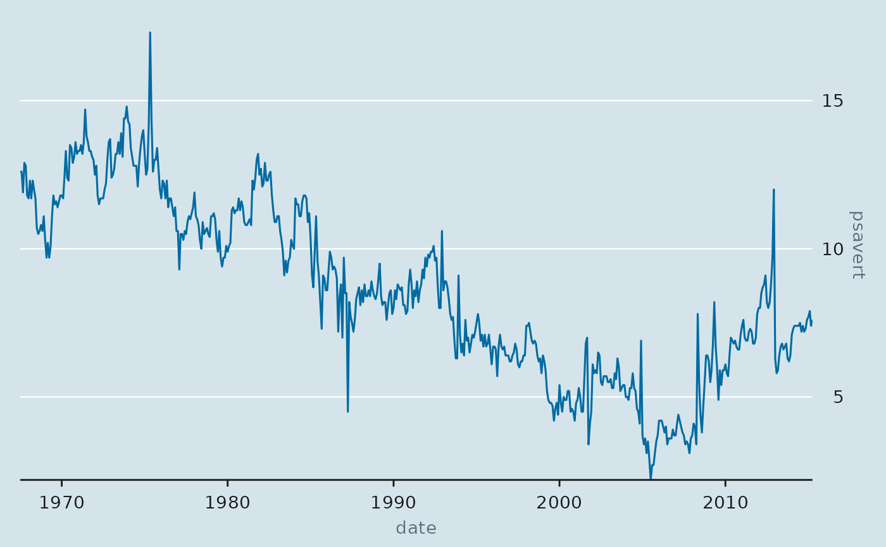

scale_y_econ() puts the y labels on the right, where The Economist prints
them, and removes the padding under the baseline so a series that touches
zero sits on the axis.
Arguments
- ...
Passed to
ggplot2::scale_y_continuous()orggplot2::scale_x_date().- position
Axis side. Defaults to
"right".- expand
Expansion, see
ggplot2::expansion().
Details
scale_x_econ_date() drops the horizontal padding so a time series runs the
full width of the panel.
Examples
library(ggplot2)
ggplot(economics, aes(date, psavert)) +
geom_line(colour = econ_colours("blue")) +
scale_x_econ_date() +
scale_y_econ() +
theme_econ()
